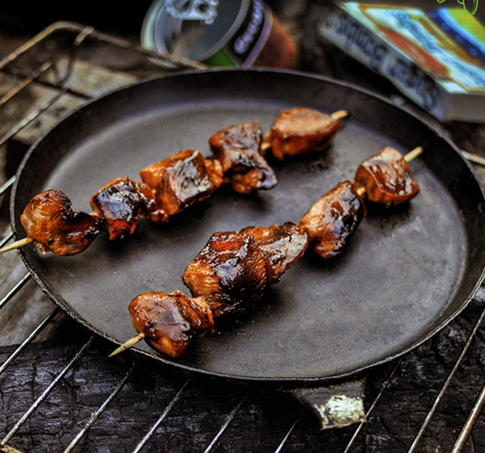

Iguana on a Stick

Description
"Iguana on a Stick" is another fictional recipe inspired by the post-apocalyptic world of the Fallout video game series. This dish showcases the resourcefulness of wasteland survivors, who have learned to make delicious and somewhat exotic meals with the ingredients they can scavenge.
Ingredients
- 1 Iguana tail (or substitute with a similarly shaped piece of meat, such as mole rat meat)
- Wooden skewer or stick
- Salt and spices (if available)
- Optional: Wasteland seasoning mix (a blend of herbs and spices)
Steps
- Prepare the Iguana Tail:
- If you're fortunate enough to have an actual Iguana tail, you'll want to remove any scales, clean it thoroughly, and cut it into manageable-sized pieces. If not, you can use a piece of meat that is roughly the same shape and size.
- Season the meat with salt and any available spices or seasoning mix. Wasteland survivors often rely on homemade spice blends to add flavor to their dishes.
- Skewer the Meat:
- Carefully thread the seasoned meat onto a wooden skewer or stick. Make sure it's securely fastened to the stick to prevent it from falling off during cooking.
- Cook Over an Open Flame:
- In the wasteland, open flames are a common cooking method. You can cook your Iguana on a Stick over a campfire, makeshift grill, or any heat source you have available.
- Hold the skewer with the meat over the flames, rotating it regularly to ensure even cooking. The meat should cook until it's browned and cooked through, typically for about 10-15 minutes.
- Serve:
- Once your Iguana on a Stick is cooked to your liking, remove it from the heat source.
- Serve it hot and enjoy this simple but flavorful wasteland delicacy.